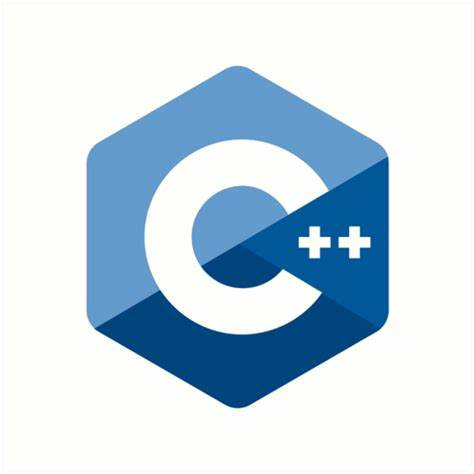

Skills


- 

Favorite programming languages
When I start a new project, my preferred language is Python because I feel very comfortable with its syntax and flexibility. However, I am entirely capable of adapting to other languages if the project's requirements dictate it. For me, the tool is a means to an end, and the key lies more in our approach and the algorithms we use to solve problems. If I were to work with a different language, I quickly learn its syntax to implement the necessary algorithms.


Machine Learning and Deep Learning
In my exploration of Machine Learning and Deep Learning, I have gained proficiency in a wide range of tools for creating, training, and deploying machine learning models. I am skilled in using scikit-learn for model development, data manipulation, and performance evaluation. In the realm of Deep Learning, I have a strong command of PyTorch, TensorFlow, and Keras, powerful frameworks for constructing neural networks. These skills enable me to address computer vision challenges like Optical Character Recognition (OCR), object detection, and image classification, as well as natural language processing tasks, including sentiment analysis and working with large language models (LLMs) and AI generative techniques using transformers. I can customize models to meet the specific requirements of diverse domains.

Data Cleaning, Analytics and VisualiZation
My role as a data scientist goes beyond merely creating models. I am also an expert in data cleaning, in-depth analysis, and visualization. I utilize essential tools like Pandas and NumPy for data cleaning and preparation, ensuring that data is reliable and of high quality. Additionally, I have a strong command of Excel, enabling me to work efficiently with structured data. When it comes to data visualization, I leverage Power BI to craft interactive dashboards that provide a clear understanding of trends and insights. My data-centric and visualization-focused approach allows me to extract valuable insights from data, facilitating informed decision-making.


SQL, NoSQL for Big Data analytics
I have a dual expertise in databases, combining SQL for managing structured data on servers such as SQL Server, Oracle, and MySQL, and NoSQL for agility in Big Data analysis. With SQL, I work meticulously on structured data, ensuring efficient data administration and management. When dealing with massive scale, Hadoop and Spark come into play, enabling me to process and analyze vast amounts of data. For flexibility, scalability, and speed, I turn to MongoDB, which offers a robust NoSQL solution for a variety of data types. My objective is to combine these tools to extract meaningful insights from Big Data, contributing to informed decision-making.


Full stack development
As a passionate data scientist, I don't limit myself to data analysis and modeling alone; I also enjoy diving into the world of web development. My skill set encompasses HTML, CSS, JavaScript, as well as back-end frameworks like Node.js, Django, and Flask. This versatility allows me to design and develop web applications from start to finish, from creating an elegant user interface to integrating advanced features. By merging my expertise in data science with full-stack skills, I'm capable of creating comprehensive solutions.


Versioning, Automation and Deployment
In the field of version control, automation, and deployment, I am a seasoned professional. I have mastered Git and GitHub for efficient code version management and team collaboration. For task automation and continuous deployment, I rely on tools such as Ansible and Jenkins, which streamline the development, testing, and deployment process. This expertise enables me to ensure smooth workflows, expedite development cycles, and deliver high-quality products efficiently, all while maintaining seamless collaboration within the team.